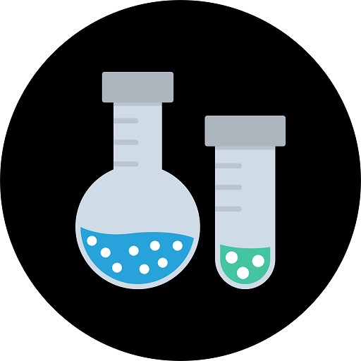

Basic Requirements and Challenges
The product will need to have some mechanism by which the exoskeleton can be designed to attach to it by. Furthermore, the fingers will need to be slightly flexible to allow for a more natural feel.
However, the product will need to have a completely rigid palm. Furthermore, these fingers need to be posable, so they need to be connected to the palm with joints. However, the fingers don’t need to have joints along their length.
Features not included
The product being developed is the internal structure of a hand replication, which will be combined with a hard exoskeleton and covered with a silicon skin.
The product will need to have the general form of a hand but does not require to exactly match the shape of the hand since this will be achieved by the exoskeleton and does not need to match the aesthetics of a/the hand since this will be completed by the silicon skin.
What did I experiment with?
blah blah blah
